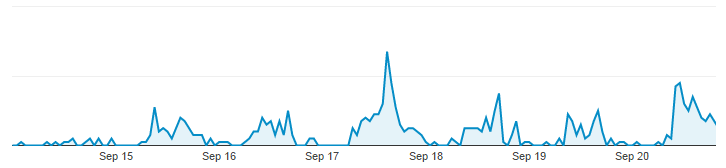
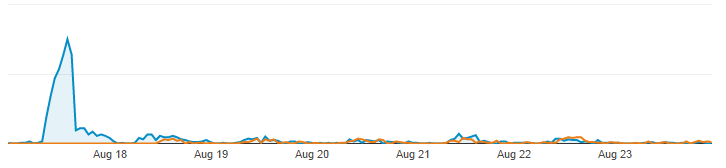
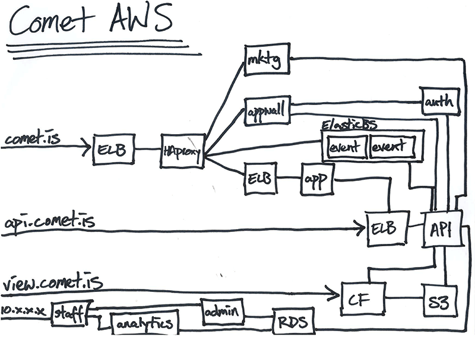

How Not to Node (In Production)
Who are we?
What do we do?
Events, at the moment.
- 
- 
Wow! Node!
node comet.js...Oops!
node comet.js &
What about dev?
sudo killall node && node comet.js &
So much anger. :(
nodemon
nodemon -e ".js|.sql|.html" -w . comet.js
Still there, to this day. :o
And then?
grunt server
Yes, of course this would now be
`gulp serve`
Back to Production
- nodemon doesn't work
- Look at system tools?
- init!
init
1 #!upstart
2 description "Comet API beta server 0.1"
3 author "sysadmin@careerlounge.com.au"
4
5 start on startup
6 stop on shutdown
7
8 setuid www-data
9 setgid www-data
10
11 script
12 export HOME="/home/ubuntu"
13 export APPDIR="${HOME}/comet-cl-api"
14 export NODE_ENV="demo"
15 export NODE_PATH=$APPDIR
16
17 chdir $APPDIR
18 echo $$ > /var/run/comet.pid
19 exec sudo -u root /usr/bin/node /home/ubuntu/comet-cl-api/comet.js >> /var/log/comet.sys.log 2>&1
20 end script
21
22 pre-start script
23 # Date format same as (new Date()).toISOString() for consistency
24 echo "[`date -u +%Y-%m-%dT%T.%3NZ`] (sys) Starting" >> /var/log/comet.sys.log
25 end script
26
27 pre-stop script
28 rm /var/run/comet.pid
29 echo "[`date -u +%Y-%m-%dT%T.%3NZ`] (sys) Stopping" >> /var/log/comet.sys.log
30 end script
Largely works. Sort of. Kind of.
What about scaling?
- CLOUD
- Yes, cloud.
- "Toy port" to AWS
- Prod 2 days later
Actual AWS*
- Elastic Beanstalk
- Opsware
- Autoscaling
git pushHuzzah!
Unfortunately
Back to dev?
And then?
- ...
- ...
- ...
- Docker?
Docker

- Best logo I've seen in ages
- It's trendy. Right? Is it still trendy?
- Seems legit
- In all seriousness, it seems promising and well supported...
- By MULTIPLE cloud providers. This is key.
Options?
- Perhaps not a huge number
- "Canned magic" hosting ($$$$$)
- Opsware (More manual)
- PM2 + something? (Feels like it's trying to do too much)